The Grand View Garden of The Dream of Red Mansions, painted by Sun Wen (1818–1904) for his illustrated album of the novel. Public domain, Wikimedia Commons.
Recap · Late Ming culture · 1500s–1600s
Recap: Late-Ming Readers Loved Novels and Plays
In late-Ming cities, publishers printed novels in the vernacular, the everyday written language · Ch. 14 L4 · vernacular ↗
Sources: Ebrey, Ch. 16, p. 281; L2 for the literary inquisition.
Q9 story · Hangzhou and Nanjing · 1700s
Yet the Poet Yuan Mei Took Women as Students, and One Defended Him
Both the Manchu rulers and the Chinese elite left room for the less conventional.
The poet Yuan Mei risked censure by taking on women as poetry students.
In 1797 his student Luo Qilan defended him: if women's words had to stay indoors, Confucius would have cut women's poems from the Book of Poetry.
Yuan Mei had his women students painted on a scroll and wrote their names on it himself.
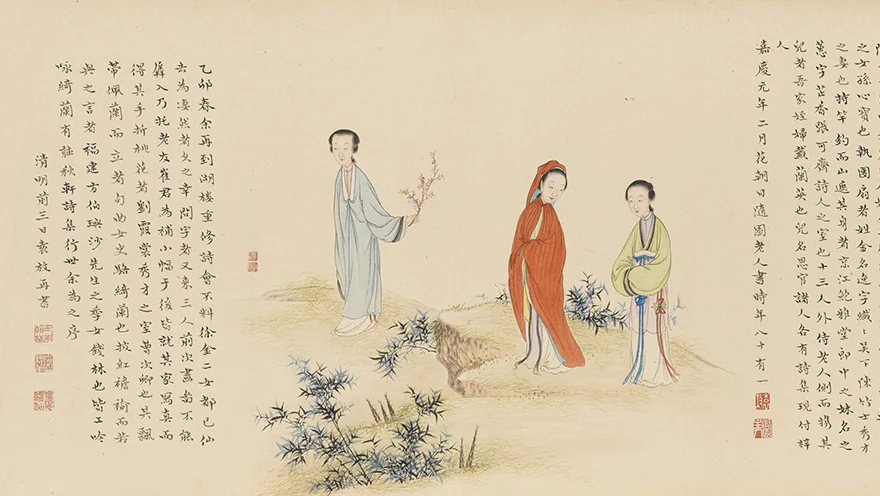
Three of Yuan Mei's women students, from The Female Disciples of Suiyuan, a handscroll begun by You Zhao and Wang Gong in 1792. Yuan Mei's inscription names the woman at right, in green with an orchid at her sash, as Luo Qilan. Public domain, Wikimedia Commons.
Sources: Ebrey, Ch. 16, pp. 281–282.
Q9 story · Yangzhou · 1700s
The Eight Eccentrics of Yangzhou Painted for Themselves, and Still Sold
The Eight Eccentrics of Yangzhou used ink painting as a means of self-expression.
They had no trouble finding patrons, even among social and cultural conservatives.
Jin Nong filled the space on his paintings with his own writing, in his own distinctive hand.
Zheng Xie was known for bamboo, and Luo Ping for ghosts.
Sources: Ebrey, Ch. 16, pp. 281–282.
Q9 story · Nanjing and Beijing · 1700s
A Bondservant Family Rose with the Manchus, Then Went Bankrupt
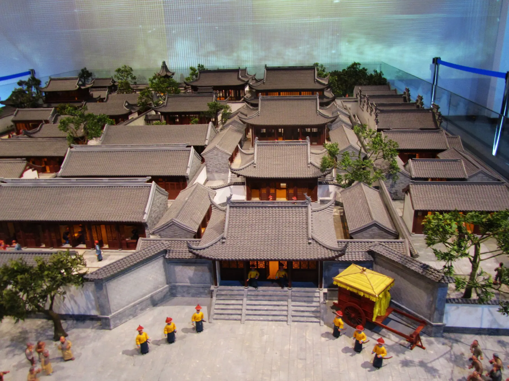
A modern museum model of the Jiangning Imperial Silk Manufactory office in Nanjing, which Cao Xueqin's family ran for three generations. Jiangning Imperial Silk Manufacturing Museum. Photo: 猫猫的日记本, CC BY-SA 3.0, Wikimedia Commons.
Cao Xueqin (c. 1715–1763/64) wrote the first eighty chapters of The Dream of Red Mansions.
His family were bondservants of the ruling house who had risen with the Manchus.
They gained great wealth and power managing enterprises for the rulers; his grandfather hosted the Kangxi emperor in Nanjing · L2 h · southern-tours ↗
In the 1700s, however, the family lost favor and went bankrupt.
Sources: Ebrey, Ch. 16, pp. 281–282.
Q9 names · One novel, two titles
Names Box: Dream of Red Mansions = Story of the Stone
One Novel, Several Names
The Dream of Red MansionsThe title our textbook uses; in Chinese, Hongloumeng; also translated Dream of the Red Chamber
The Story of the StoneThe novel's other title; the story begins with a magic stone that is born into the world as the boy Baoyu
120 chaptersEighty by Cao Xueqin, forty added by another writer; published in 1791
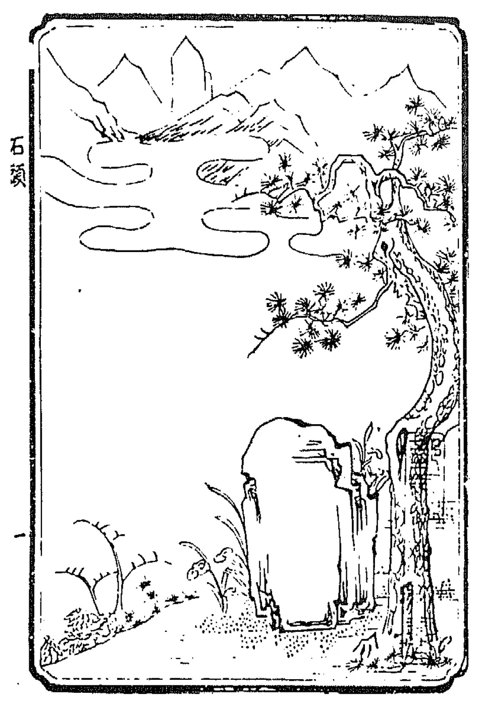
The Stone: the first illustration in the 1791 Cheng–Gao edition, the first printed edition of the novel, as dated on Wikimedia Commons. Public domain, Wikimedia Commons.
Sources: Ebrey, Ch. 16, pp. 281, 283.
Q9 story · The Jia family mansion · the novel
The Jia Family Built a Garden for an Imperial Consort's Visit
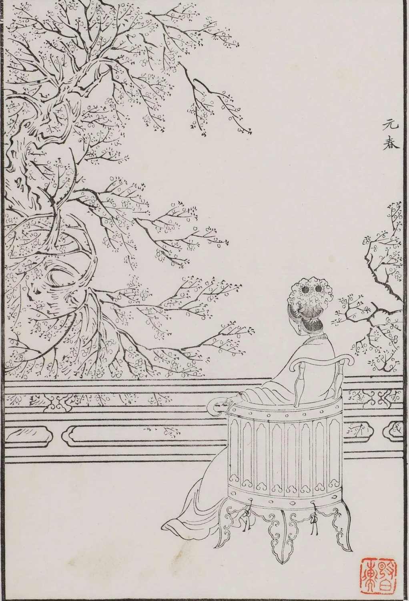
Jia Yuanchun, Baoyu's sister, who became an imperial consort, drawn by Gai Qi (1773–1828) and printed in 1879. Public domain, Wikimedia Commons.
Dream portrays the affairs of the wealthy Jia family in magnificent detail.
A magnificent garden was built in the family compound to receive a visit from Baoyu's sister, who had become an imperial consort.
After the visit, Baoyu, his cousins, and their servants moved into the garden, an idyllic world of youth and beauty.
Around them swirl officials, monks and nuns, gamblers, actors, and plots of every kind.
Sources: Ebrey, Ch. 16, p. 283.
Q9 story · Three adolescents · the novel
Baoyu Lived Among Cousins: Sickly Daiyu and Cheerful Baochai
The central characters are three adolescents: Jia Baoyu and two female cousins of other surnames.
Lin Daiyu is sickly and difficult.
Xue Baochai is capable and cheerful.
Women with poetic talents figure prominently in the novel.
Sources: Ebrey, Ch. 16, pp. 281, 283.
Q9 story · The end of the garden · the novel
Baoyu Was Tricked into Marrying Baochai as Daiyu Lay Dying
In the last forty chapters, added by another writer, the magical period in the garden ends.
Baoyu is tricked into marrying Baochai, thinking he is marrying Daiyu.
While the wedding is taking place, Daiyu is on her sickbed, dying of consumption.
The novel is about love and desire, money and power, life and death, and truth and illusion.
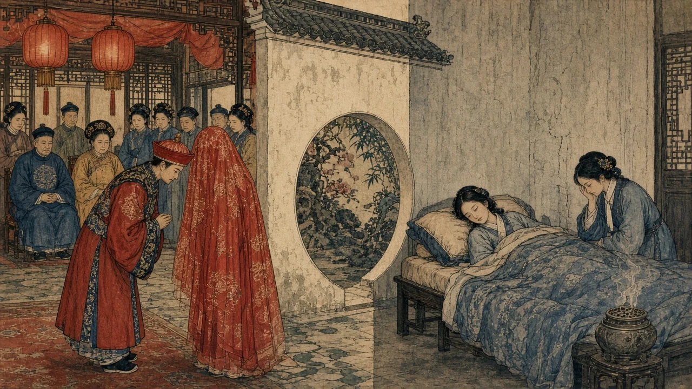
AI-generated illustration in a woodblock-print style, made for this deck: on one side of the garden wall, Baoyu bows beside his veiled bride; on the other, Daiyu lies dying while a maid weeps. An interpretation, not a historical source.
Sources: Ebrey, Ch. 16, pp. 281, 283. Image: AI-generated interpretation.
Q9 story · The last chapter · the novel
Baoyu Passed the Provincial Exam, Then Walked Away
Near the end, Baoyu passes the provincial examination, placing seventh.
Then he leaves his wife and family to pursue religious goals.
Dream is a story about truth and illusion, and the ending turns the whole garden into a dream.
Readers still argue over the last forty chapters, added by another writer.
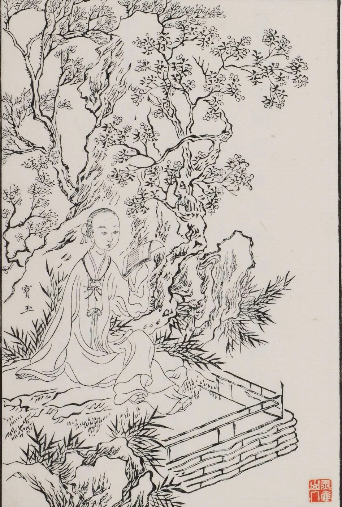
Jia Baoyu, drawn by Gai Qi, printed 1879. Public domain, Wikimedia Commons.
Sources: Ebrey, Ch. 16, pp. 281, 283.
Q9 primary text · The Story of the Stone · the novel
Baochai Remembered Reading Plays in Secret, and the Book Burnings
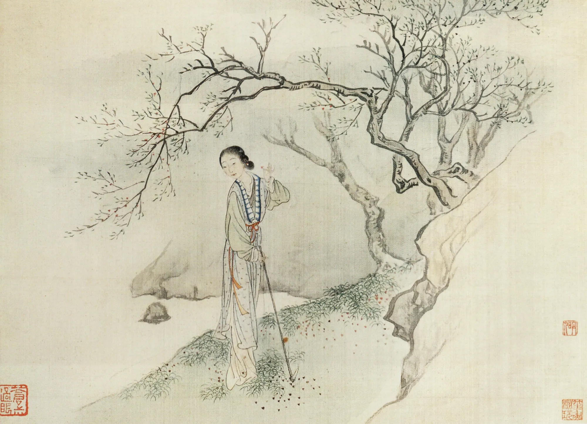
Lin Daiyu in the garden, by Fei Danxu (1801–1850). Public domain, Wikimedia Commons.
Baochai notices that Daiyu has unconsciously quoted a line from a play.
She confesses that the children in her family read plays in secret, boys and girls alike.
When the grown-ups found out, there were beatings, lectures, and burnings of books.
"Eventually the grown-ups got to know about it and then there were beatings and lectures and burnings of books—and that was the end of that."
Baochai, in The Story of the Stone, trans. David Hawkes
Sources: Ebrey, Ch. 16, p. 283, quoting Cao Xueqin, The Story of the Stone, trans. David Hawkes, vol. 2, p. 333.
Reading Guide · Review Question 9
Reading Guide · Review Question 9
Review Question 9
Urban Culture and The Dream of Red Mansions: Despite the conservative political climate, how did vernacular literature and individualistic art continue to develop during the Qing period? Use The Dream of Red Mansions as a primary example.
Population growth and partible inheritance left farms too small to support a family · L3 m · concept-partible ↗
Many men could not marry, because there were too few marriageable women · L3 n · missing-women ↗
They left their villages to haul boats, carry chairs, and mine copper · L3 o · rootless ↗
Single men often found support in groups called brotherhoods or secret societies.
Sources: Ebrey, Ch. 16, pp. 284–285; L3 for the rootless men.
Q10 concept · Secret societies and sects
Concept: Secret Societies and Sects
Concept
Secret society · Sect
A secret society is a brotherhood whose members swear loyalty to one another and keep their rituals and signs hidden from outsiders. A sect is a religious group that follows its own teachers and scriptures outside the approved clergy.
Secret societies gave single men security, mutual aid, and empowerment.
Sects such as the White Lotus offered salvation, healing, and a community of believers.
Both drew on ideas from Daoism, Buddhism, and popular religion.
The Qing government tried, from time to time, to suppress them, because they were often anti-establishment.
Sources: Ebrey, Ch. 16, pp. 285, 287.
Q10 story · Fujian, Taiwan, and the south · from the 1760s
The Heaven and Earth Society Offered Brothers, Loans, and Passwords
The Heaven and Earth Society, the best-known brotherhood, appeared in the 1760s and spread across the south.
Government functionaries and urban workers were among its members.
Lodge brothers helped each other with loans, funeral costs, and lawsuits, and could find brothers anywhere through secret signals or passwords.
But their morality was not Confucian: many lodges controlled gambling, narcotics, prostitution, and smuggling.
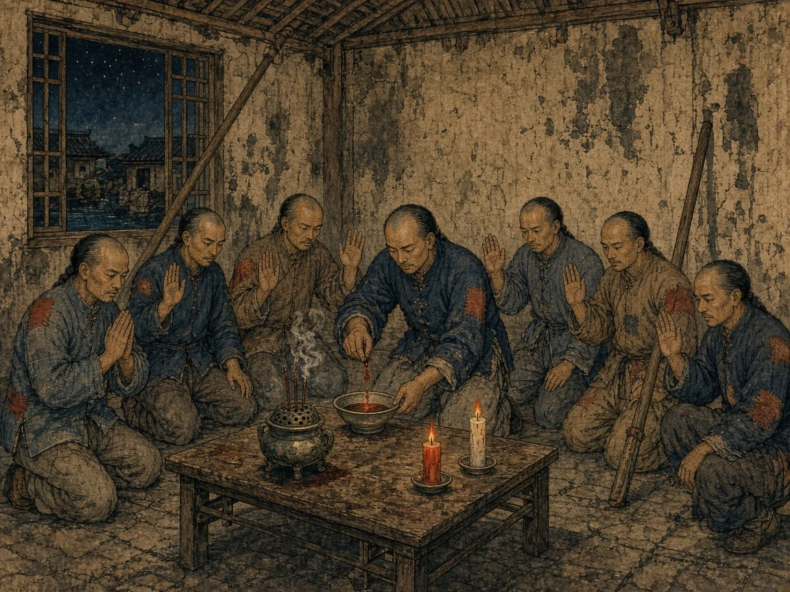
AI-generated illustration in a woodblock-print style, made for this deck: poor working men swear brotherhood at night in a rented room, one mixing a drop of blood into the wine of the oath. An interpretation, not a historical source.
Sources: Ebrey, Ch. 16, p. 285. Image: AI-generated interpretation.
Q10 story · Taiwan and the south · 1760s–1780s
Its Slogan Was "Overthrow the Qing and Restore the Ming"
The first uprising led by the Heaven and Earth Society broke out in Taiwan in the 1780s.
Afterward the Qing government tried, without much success, to suppress the society.
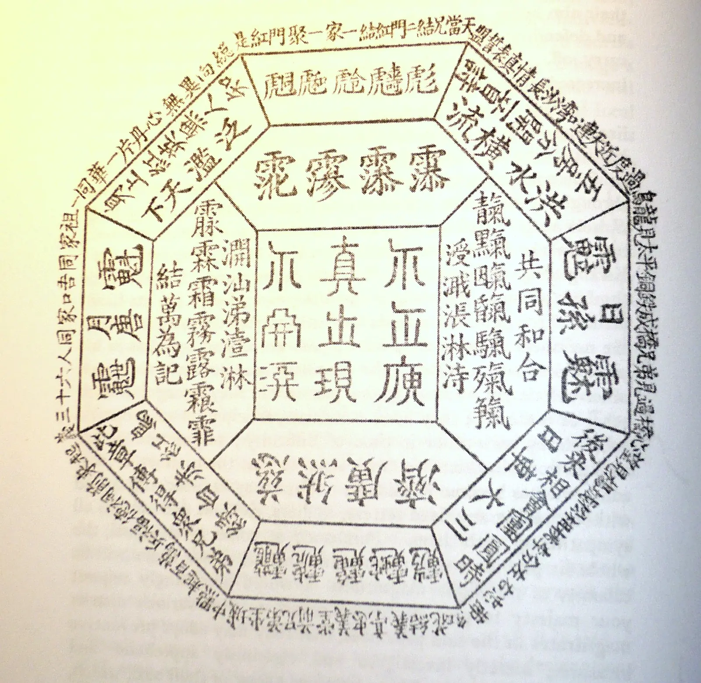
A Triad lodge token from Guangdong, late 1800s, a later example of the secret signs the brotherhoods used. Public domain, Wikimedia Commons.
Sources: Ebrey, Ch. 16, p. 285.
Recap · From the Yuan to the Qing
Recap: White Lotus Believers Had Helped Topple the Mongols
The White Lotus Society drew on folk Buddhist teachings that dated back to the Song.
It had been an important element in the rebellions at the end of the Yuan · Ch. 14 L1 · red-turbans ↗
Regular Buddhist clergy did not approve of its mixed teachings, married clergy, and unofficial scriptures.
It taught that the future Buddha, Maitreya, would usher in an era of peace.
Sources: Ebrey, Ch. 16, p. 285; Ch. 14 L1 for the Red Turbans.
Q10 story · The White Lotus faith
The Eternal Mother Called Her Lost Children Home
The sect's central deity was the Eternal Mother, the original ancestor of all humankind.
Grieving that her children had lost their way, she sent Buddhas to earth to lead them back to the Original Home.
When the end was near, floods, fires, and winds would destroy everyone who lacked faith in her.
Believers chanted a mantra for protection, and learned martial arts and breathing exercises for health.
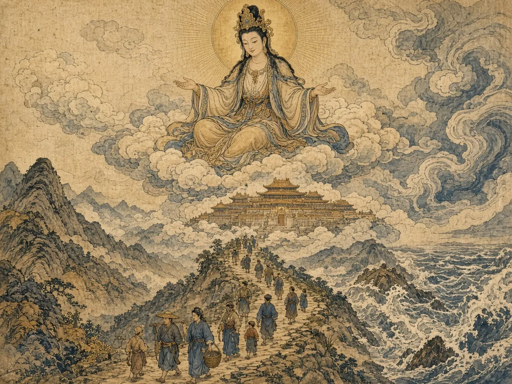
AI-generated illustration in a woodblock-print style, made for this deck: the Eternal Mother waits above the clouds to welcome her lost children home, while floods gather for those without faith. An interpretation, not a historical source.
Sources: Ebrey, Ch. 16, p. 285. Image: AI-generated interpretation.
Q10 story · Congregations in central China · 1790s
Women Joined on Equal Terms, and Some Led
White Lotus teachings had particular appeal to women, who were welcomed on the same terms as men.
When leaders were arrested or executed, often their wives took over.
The sect survived repeated suppression, probably because local congregations did not depend on a central establishment.
It was especially strong in the central provinces, from Sichuan and Shaanxi to Shandong.
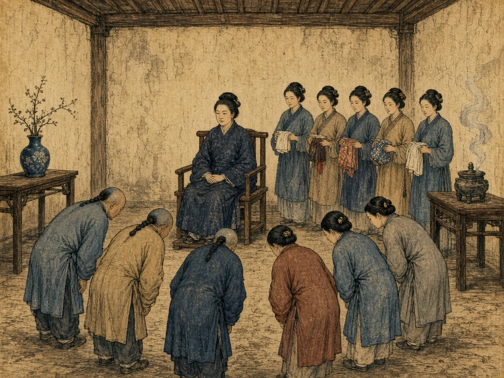
AI-generated illustration in a woodblock-print style, made for this deck: a White Lotus woman leader sits at the center of the hall, young women holding her tobacco pouches and towels, as believers bow, as a Qing official described. An interpretation, not a historical source.
Sources: Ebrey, Ch. 16, p. 285, quoting a Qing official cited in Kwang-ching Liu, "Religion and Politics in the White Lotus Rebellion of 1796 in Hubei." Image: AI-generated interpretation.
Q10 story · Hubei, Sichuan, and Shaanxi · 1793–1804
A Crackdown in 1793 Set Off the White Lotus Revolt of 1796
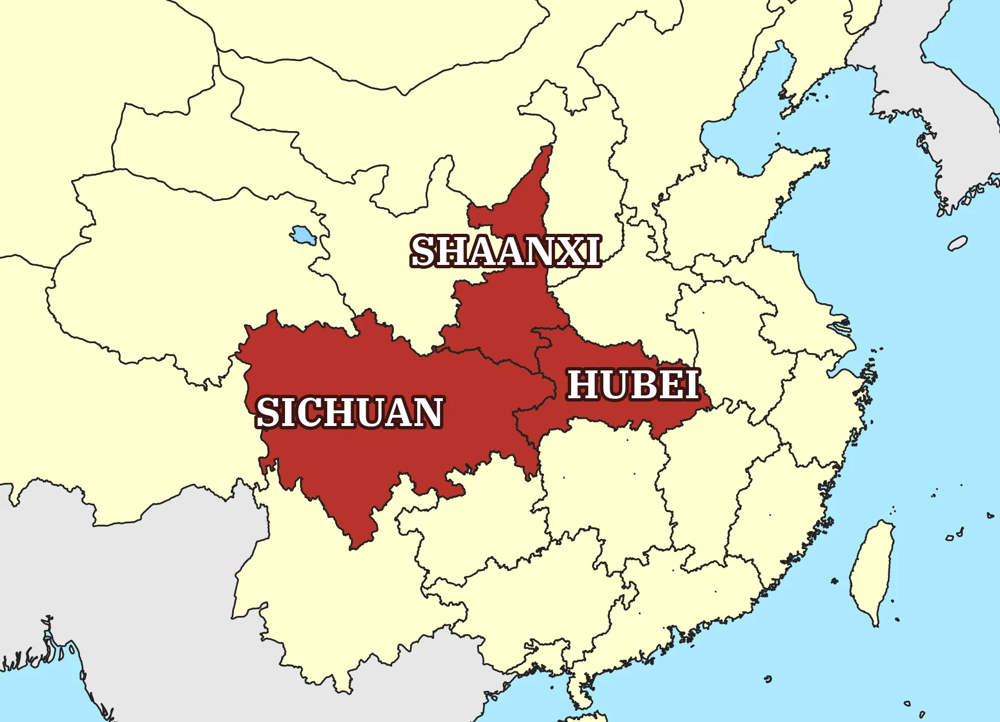
The three provinces of the White Lotus revolt, on a map of Qing provinces in 1820. Map: 瑞丽江的河水, CC BY-SA 4.0, from CHGIS data, Wikimedia Commons; recolored and labeled for this deck.
In 1793 the Qing government began a major investigation of White Lotus congregations.
The congregations soon took up arms to protect themselves from predatory local officials.
In 1796 open revolt began in Hubei and spread to Sichuan and Shaanxi; martial arts groups and bandits joined.
It took the government more than eight years to fully crush the White Lotus forces.
Sources: Ebrey, Ch. 16, p. 286.
Reading Guide · Review Question 10
Reading Guide · Review Question 10
Review Question 10
Marginalization and Secret Societies: Analyze the rise of secret societies and popular religious sects in Qing China. What social and economic conditions made groups like the Heaven and Earth Society and the White Lotus Society appealing to the common people?
By 1800 the Empire Was Vast, Crowded, and Restless
By 1800 China had been under Manchu rule for a century and a half, and the empire included Tibet and Xinjiang.
The population had probably reached at least 300 million.
Culture was more conservative, yet the greatest Chinese novel had been written.
The marginalized were joining brotherhoods and sects, and the next chapter brings the Opium War · Ch. 18 L1 · next chapter ↗
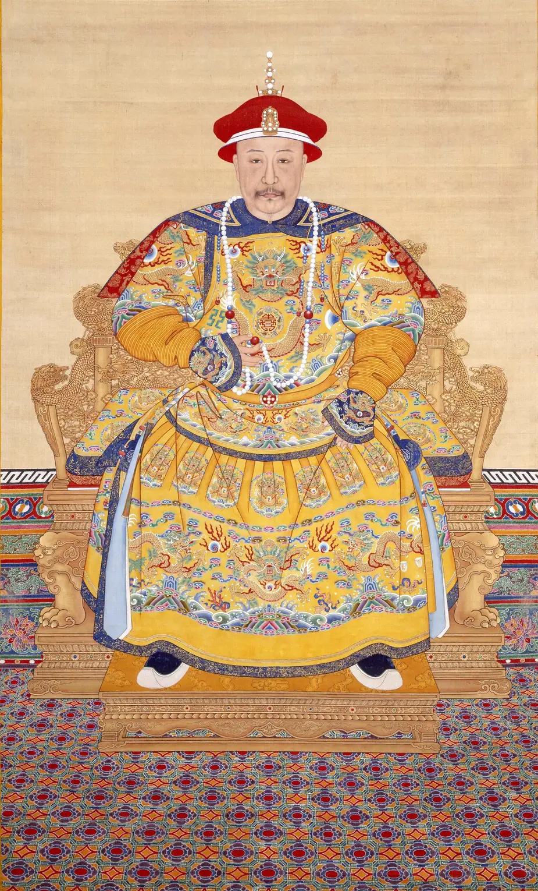
The Jiaqing emperor, who took the throne in 1796. Palace Museum, Beijing. Public domain, Wikimedia Commons.
Sources: Ebrey, Ch. 16, pp. 286–287.
Pierian Spring · Independent Study
Today's lecture ends here. Continue on your own: the stories below finish this chapter's history, and one of them ends with a review question to answer.
"A little learning is a dang'rous thing; Drink deep, or taste not the Pierian spring."Alexander Pope, An Essay on Criticism, 1711
Pierian Spring · Q8 story · After 1644
Scholars Blamed the Ming's Fall on Wang Yangming's Followers
Many Confucian scholars concluded that the Ming fell as a result of moral laxity.
Wang Yangming and his followers, by validating emotion and spontaneity, had undermined duty and respect for authority · Ch. 14 L3 · anyone-a-sage ↗
Late-Ming factional fights had already shown scholars at war with one another · Ch. 14 L4 · donglin ↗
The solution, many thought, was to return to Zhu Xi's teachings.
Sources: Ebrey, Ch. 16, p. 281; Ch. 14 L3 and L4 for Wang Yangming and the Donglin.
Pierian Spring · Q8 concept · Orthodoxy
Concept: They Returned to Zhu Xi's "Orthodox" Teaching
Concept
Orthodoxy
The officially approved, "correct" form of a teaching. In Qing China, Confucian orthodoxy meant Zhu Xi's interpretation of the classics, which was also the basis of the civil service examinations.
Zhu Xi emphasized objective standards outside the individual, rather than inner feeling · Ch. 8 L5 · zhu-synthesis ↗
This conservative turn showed itself in several ways, in society as well as in scholarship.
Sources: Ebrey, Ch. 16, p. 281; Ch. 8 L5 and Ch. 14 L3 for Zhu Xi.
Pierian Spring · Q8 story · Villages and local histories · 1700s
Cult of Widow Chastity
The Tangyue memorial arches, She County, Anhui. Two of the seven, built in the Qianlong reign, honor widows of the Bao merchant family. Photo: 王淞, CC BY-SA 4.0, Wikimedia Commons.
The cult of widow chastity was an intense devotion to the ideal that a widow should stay faithful to her dead husband and never remarry.
It reached new heights, as local histories recorded more and more widows who refused to remarry.
Families and officials honored such women with titles and stone memorial arches.
A widow's chastity was praised as loyalty to her husband's family, like a minister's loyalty to his ruler.
Sources: Ebrey, Ch. 16, p. 281.
Pierian Spring · Q8 story · The extreme case · 1700s
Some Girls Stayed "Widows" of Fiancés They Had Never Met
Some girls whose fiancés died before the wedding vowed to stay chaste for life · L1 t · gu-yanwu ↗
They lived as the celibate "widows" of men they had never even met.
The textbook's summary calls this an extreme of the cult of widow chastity.
Families married girls young, by arrangement, so a fiancé's death could come years before a wedding.
Sources: Ebrey, Ch. 16, pp. 281, 286.
Pierian Spring · Q8 story · Law and letters · 1700s
Laws Grew Harsher, and One Scholar Called Novels the Greatest Threat
Laws against homosexuality were made harsher.
Literati argued that drama and fiction were socially subversive, and the state banned many novels and plays.
Qian Daxin, a highly learned scholar, argued that the vernacular novel was the main threat to Confucian orthodoxy.
Yet the bans did not succeed in suppressing fiction · j · books-burned ↩
Sources: Ebrey, Ch. 16, pp. 281, 286.
Pierian Spring · Q8 concept · Evidential scholarship
Concept: Evidential Scholars Tested the Classics Like Detectives
Concept
Evidential scholarship
Rigorous study of the classics that relies on verifiable facts: comparing texts, checking words, dates, and place names, and asking which versions are genuine. In Chinese it is called kaozheng, "searching for evidence".
The conservative turn in scholarship fostered a new interest in rigorous textual analysis.
Some scholars went back to Han commentaries, hoping to free the classics from Buddhist and Daoist ideas.
Others relied solely on the classics themselves and concentrated on verifiable facts · L1 t · gu-yanwu ↗
This research needed large libraries, so it thrived in Jiangnan, with its many books and scholars.
Sources: Ebrey, Ch. 16, p. 281.
Pierian Spring · Q8 story · Jiangnan · late 1600s
Yan Ruoju Proved That a Revered Classic Was Not Genuine
Yan Ruoju compiled a guide to the place names in the Four Books.
He proved that the "old text" version of the Book of Documents could not be genuine.
Those chapters had been studied for over a thousand years, and some were part of the examination curriculum.
Careful evidence could overturn even a sacred text.
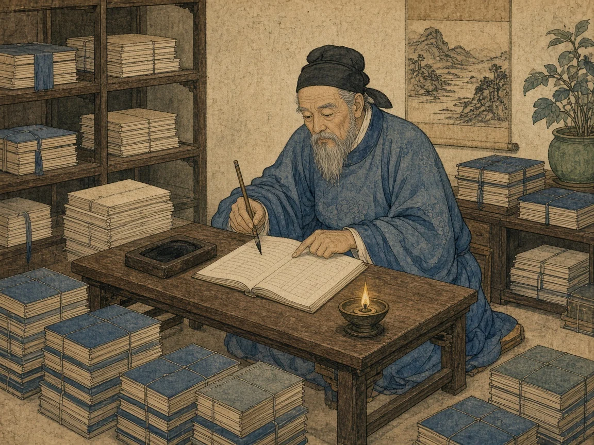
AI-generated illustration in a woodblock-print style, made for this deck: an evidential scholar of the late 1600s checks an old text line by line among his stacks of thread-bound books. An interpretation, not a historical source.
Sources: Ebrey, Ch. 16, p. 281. Image: AI-generated interpretation.
Reading Guide · Review Question 8
Reading Guide · Review Question 8
Review Question 8
The Conservative Turn in Scholarship and Society: How did the trauma of the Manchu conquest influence the trajectory of Chinese intellectual and social life? Describe the "conservative turn" that dominated Qing scholarship and social norms.
Pierian Spring · More to explore · Suzhou and Hangzhou · 1700s
A Sect Ran Hostels for Old Canal Boatmen, and the Qing Destroyed Them
Many White Lotus believers were pious vegetarians who tried to live good lives.
A related sect, the Luo teaching, set up hostels in Suzhou and Hangzhou for canal boatmen far from home.
Boatmen stayed free in winter, ate on credit, and grew old there, since many had never married.
Deeply suspicious, the Qing government had all the hostels destroyed.
Sources: Ebrey, Ch. 16, p. 285.
Sources and image credits
The Stories in This Deck Rest on These Sources
Main source
Patricia Buckley Ebrey, A History of China, Chapter 16, "The Creation of the Manchu Empire (1600–1800)," pp. 280–287. All page references in this deck are to these pages.
Cao Xueqin, The Story of the Stone, vol. 2, trans. David Hawkes (1977), p. 333, as quoted in Ebrey (slide j).
Further reading beyond Ebrey
Jonathan D. Spence, Ts'ao Yin and the K'ang-hsi Emperor (1966) (slide e).
Dore J. Levy, Ideal and Actual in The Story of the Stone (1999) (slides f–j, ff).
Kwang-ching Liu, "Religion and Politics in the White Lotus Rebellion of 1796 in Hubei," in Heterodoxy in Late Imperial China, ed. K. Liu and R. Shek (2004) (slides r–s).
Susan Naquin, Shantung Rebellion: The Wang Lun Uprising of 1774 (1981) (slide r).
Dian H. Murray with Qin Baoqi, The Origins of the Tiandihui (1994) (slides n–o).
Benjamin A. Elman, From Philosophy to Philology (1984) (slides bb–cc).
Susan Mann, Precious Records: Women in China's Long Eighteenth Century (1997) (slides d, y–z).
James Cahill, The Painter's Practice: How Artists Lived and Worked in Traditional China (1994); Kim Karlsson, Alfreda Murck, and Michele Matteini, eds., Eccentric Visions: The Worlds of Luo Ping (2009) (slide hh).
Andrea S. Goldman, Opera and the City (2012) (slide c); Barend J. ter Haar, The White Lotus Teachings in Chinese Religious History (1992) (slides p, ee); Weijing Lu, True to Her Word (2008) (slide z).
David E. Kelley, "Temples and Tribute Fleets: The Luo Sect and Boatmen's Associations in the Eighteenth Century," Modern China 8 (1982) (slide ee).
Images (real; all via Wikimedia Commons)
a: Sun Wen, the Grand View Garden, from his album of the novel, 1800s. Public domain.
d: You Zhao, Wang Gong, and others, The Female Disciples of Suiyuan, handscroll, 1792 and after, with inscriptions by Yuan Mei. Public domain.
hh: Jin Nong, self-portrait, 1759, Palace Museum, Beijing; Zheng Xie, Bamboo and Rocks, 1760, Minneapolis Institute of Art; Luo Ping, album of ghost paintings, 1700s, Honolulu Museum of Art (photo CC0). Public domain.
e: Model of the Jiangning Imperial Silk Manufactory, Nanjing. Photo: 猫猫的日记本, CC BY-SA 3.0.
f: The Stone, from the 1791 Cheng–Gao edition of the novel (date per Commons). Public domain.
g, h, ff: Gai Qi, portraits of the novel's characters, printed 1879. Public domain.
j: Fei Danxu, Lin Daiyu in the garden, before 1850. Public domain.
o: Triad lodge token, Guangdong, late 1800s. Public domain.
s: Map of Qing provinces in 1820 by 瑞丽江的河水, CC BY-SA 4.0, recolored and labeled for this deck.
u: The Jiaqing emperor in court robes, Palace Museum, Beijing. Public domain.
y: Tangyue memorial arches, She County, Anhui. Photo: 王淞, CC BY-SA 4.0.
i, n, q, r, cc: AI-generated illustrations in a woodblock-print style, made for this deck. Interpretations, not historical sources.
A hereditary servant of the Manchu imperial household or of a banner. Bondservants belonged to their masters, but the emperor's bondservants often served as his trusted agents, managing the silk works, customs houses, and salt monopolies.